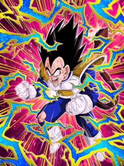

NAME
Vegeta
Leader Skill
"Inhuman Deeds" Category Ki +3 and HP, ATK & DEF +120%
Passive Skill
Ki +3 and ATK & DEF +100%; plus an additional ATK & DEF +40% when performing a Super Attack; medium chance[2] to guard all attacks
